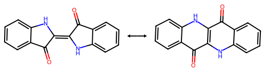

研究成果
Giovanni Gravili ![]()
科学的な問いごとにまとめた計算化学の結果です。インディゴとエピンドリジオンのプロトン移動と炭素交換、電子遮蔽と光励起、反応経路の参照計算を扱います。各プロジェクトのページにはワークフローの一覧があり、各ワークフローは一つのノートブックで報告しています。
インジゴとエピンドリジオン
2 つの分子骨格で、電子構造、プロトン移動、炭素の転位を比べます。

| 状態 | 期間 | プロジェクト | 説明 |
|---|---|---|---|
 |
2026年10月15–16日 | インジゴとエピンドリジオンのプロトン移動 | 両方の骨格で N–H から O–H へのプロトン移動を、サンプリング、TS の精密化、IRC、端点の検証、電子場の比較を通してたどります。 |
 |
2026年10月15–17、20日、11月10日 | 炭素の交換と中心結合のねじれ | 平面での転位とその電子場を調べ、あわせて独立な面外の TS 探索を行います。 |
電子的スクリーニングと光学励起
ベンゼンでスクリーニングの計算を確立し、ベンゼンとジフルオロホウ素色素について B3LYP と DD-DFT を比べます。


| 状態 | 期間 | プロジェクト | 説明 |
|---|---|---|---|
![進行中]() |
2026年10月17、21–26、28–30日 | 分子のスクリーニング \varepsilon_s と S_0\rightarrow S_n 励起 | Gaussian の構造と励起を、Lotus のスクリーニングおよび BLYP に基づく DD-DFT の重みと結びつけます。 |
Diels–Alder 環化付加
共役ジエンと親ジエン体の協奏的な [4+2] 環化付加を、鞍点と IRC から六員環の付加体までたどります。
| 状態 | 期間 | プロジェクト | 説明 |
|---|---|---|---|
|
2026年11月4–9日 | ブタジエンとエテンの Diels–Alder 反応 | ずらしたエテンと中央に置いたエテンの初期推定を同じ [4+2] 鞍点、IRC、端点のチェックで比べ、どの接近構造が鞍点に達するかを地図にします。 |
どちらの分子でも、PM6 のプロトン移動の経路と両方の端点の極小は検証されており、B3LYP の場は完成しています。
両方の骨格での N–H から O–H へのプロトン移動
半経験的な PM6 によるプロトン移動座標のスキャンが鞍点の探索の出発点になり、IRC が鞍点を両方の互変異性体につなぎ、B3LYP/6\text{-}31{+}\mathrm{G}(d) 一点計算が停留点での密度と ESP を与えます。
| 状態 | 期間 | ワークフロー | 説明 |
|---|---|---|---|
|
2026年10月15–16日 | インジゴのプロトン移動 | インジゴの N–H から O–H へのプロトン移動を、緩和スキャンから検証した鞍点と両方の IRC の端点まで辿り、その 2 つの互変異性体の ESP を比べます。 |
|
2026年10月15–16日 | エピンドリジオンのプロトン移動 | 同じプロトン移動の手順をエピンドリジオンで繰り返し、その障壁の領域、鞍点、互変異性体の ESP をインジゴのものと比べます。 |
- 平面上のつながりは確立されましたが、全空間での一次の鞍点もねじれの経路も見つかっていません。
面内の炭素交換
分子を平面に保った分散補正付き PM6 スキャンで面内の交換の鞍点とその IRC を求め、B3LYP/6\text{-}31{+}\mathrm{G}(d) の一点計算で経路に沿った密度と ESP を求めます。
| 状態 | 期間 | ワークフロー | 説明 |
|---|---|---|---|
|
2026年10月15–16、20日 | 平面に拘束した炭素交換 | 両方の分子から平面の鞍点を通る面内の交換をたどり、経路に沿った ESP を求めます。 |
拘束のない炭素交換
すべての座標を自由にした PM6-D3 の鞍点探索を平面スキャンの極大から始め、収束した一次の鞍点があれば IRC でたどります。
| 状態 | 期間 | ワークフロー | 説明 |
|---|---|---|---|
 |
2026年11月10日 | 拘束のない炭素交換 | 平面スキャンの極大から、平面の鞍点の虚振動に沿って面外にずらし、固定する座標なしで出発します。全座標空間で一次の鞍点とその反応経路を探し、鞍点と経路の両端で B3LYP の一点計算を準備します。 |
面外の鞍点探索
ねじれた構造や面外にずれた初期構造を、すべての座標を自由にして PM6-D3 で精密化し、収束した各構造が一次の鞍点かどうかを振動数で調べます。
| 状態 | 期間 | ワークフロー | 説明 |
|---|---|---|---|
|
2026年10月17日 | 面外の中心結合のねじれ | ねじれた初期構造に向けて中心結合の二面角をスキャンし、それが停留したねじれの鞍点に精密化されるかを調べます。 |
|
2026年10月20日 | インジゴのずれによる TS 実験 | 面外にずらしたインジゴの二つの構造を精密化しますが、どちらも一次の鞍点には収束しません。 |
- 独立な初期推定で作り直したベンゼンの計算は、チェックポイントをつないだ最初のサイクルの B3LYP と DD-DFT のスペクトルを、それぞれ 3 と 1\,\mathrm{meV} 以内で再現します。
- 構造とスクリーニングの 2 回目のサイクルは、丸めた DD-DFT の重みを再現します。
- メトキシ体の比較はまだ検証されていません。独立な初期推定による作り直しは準備済みです。
- チェックポイントをつないだジメチルアミノ体のワークフローは、投入前に置き換えられました。
遮蔽計算の参照としてのベンゼン
気相スペクトルが測定されている小さな芳香族分子のベンゼンで、色素に進む前にスクリーニングの計算と、B3LYP と DD-DFT の比較を確立します。
| 状態 | 期間 | ワークフロー | 説明 |
|---|---|---|---|
|
2026年10月17日 | ベンゼンの電子的スクリーニング \varepsilon_s | 付属の例の固定した構造で、Lotus の遮蔽した Slater 交換と 6\text{-}31\mathrm{G} 基底を使い、電子的スクリーニング \varepsilon_s を収束させます。 |
 |
2026年10月21–23日 | 初期推定をつないだベンゼン | ベンゼンのスクリーニング、構造、吸収の比較を気相スペクトルと照らし合わせます。Gaussian の各段階は前の段階のチェックポイントを読みます。 |
|
2026年10月29–30日 | 独立な初期推定によるベンゼン | 記録した座標と既定の初期推定からベンゼンの比較を作り直し、安定性のチェックとエネルギー、軌道ギャップの記録を加えます。最初のサイクルはチェックポイントをつないだスペクトルを再現します。 |
メトキシ置換ジフルオロホウ素キレート（1）
Saito ら（2023）の構造 1 は吸収と発光が 5 種類の溶媒で測定されており、IEFPCM のアセトニトリル中のドナー–アクセプター色素で比較を試します。
| 状態 | 期間 | ワークフロー | 説明 |
|---|---|---|---|
|
2026年10月21、23–26日 | 初期推定をつないだメトキシキレート（1） | Saito らの構造 1 に比較を当てはめ、吸収と S_1 の緩和を測定スペクトルと比べます。ここでもチェックポイントをつなぎます。 |
|
2026年10月28日 | 独立な初期推定によるメトキシキレート（1） | 記録した座標と既定の初期推定からメトキシキレートの比較を準備し、ベンゼンと同じ安定性、エネルギー、軌道ギャップのチェックを加えます。まだどの計算も投入していません。 |
ジメチルアミノ置換ジフルオロホウ素キレート（3）
同じ論文の構造 3 はメトキシのドナーをジメチルアミノに置き換えたもので、その TICT 発光からドナー置換の効果を切り分けます。
| 状態 | 期間 | ワークフロー | 説明 |
|---|---|---|---|
|
2026年10月21日 | ジメチルアミノキレート（3） | チェックポイントをつないだスクリーニング、吸収、S_1 緩和の手順を準備しましたが、投入前に置き換えられました。 |
- オフセットした平面の鞍点は、虚振動 530.1194i\,\mathrm{cm}^{-1} を一つ持ち、閉殻の波動関数は安定で、形成中の C–C 結合は 2.2675\,\text{\AA} に収束しました。
- その IRC の分枝は \pm s に沿って進み、フラグメントが分離した端は鞍点より 76.6\,\mathrm{kJ\,mol^{-1}} 低く、環が閉じた端は 246.0\,\mathrm{kJ\,mol^{-1}} 低くなりました。
- どちらの端点も検証した極小ではありません。逆向きの端点は虚振動を一つ持つボート形のシクロヘキセンで、反応物の最適化は 100 ステップの上限で止まりました。
- 同一平面の初期推定のワークフローは却下されました。鞍点ではなく、閉じたシクロヘキセン状の環に緩和したためです。
- TS の結果マップは、90 個の初期構造のうち 41 個から鞍点に達しました。同一平面の初期構造は、メチレン基を閉環した構造のねじれに向けて回転させたときにだけ鞍点に達します。
シクロヘキセンの生成
母体の Diels–Alder の組は、芳香族化の前に六員環を作る協奏的な [4+2] の段階を切り出します。
| 状態 | 期間 | ワークフロー | 説明 |
|---|---|---|---|
|
2026年11月4–6日 | オフセットした平面からの経路 | フラグメントを平行にオフセットした平面に置いて初期推定を作り、鞍点に精密化して、\pm s の IRC 分枝をたどり、端点を最適化します。 |
|
2026年11月4日 | 同一平面の初期推定からの経路 | 二つの炭素骨格を一つの平面に置き、メチレン基をねじって初期推定を作りますが、鞍点ではなく閉じた環に緩和しました。 |
遷移状態の結果マップ
エテンの位置とメチレン基の回転の格子の各点から TS の最適化を一つずつ始め、どの初期構造が協奏的な鞍点に達するかを示します。
| 状態 | 期間 | ワークフロー | 説明 |
|---|---|---|---|
|
2026年11月6–9日 | TS の結果マップ | 同一平面と平行平面の配置の間で、三つの距離と六つのメチレン基の回転から始めた TS の最適化を分類します。90 個すべてを実行し、41 個が鞍点に達しました。 |
結果マップの確認
準備した三つの計算で、結果マップだけでは分けられない初期構造の歪み、ポテンシャル面、最適化法を切り分けます。
| 状態 | 期間 | ワークフロー | 説明 |
|---|---|---|---|
|
2026年11月9日 | 結果マップの初期構造のエネルギー | 72 個の異なる初期構造の一点計算で、鞍点に達しなかった初期構造が歪んだものかどうかを調べます。 |
|
2026年11月9日 | 二つの形成中の結合の緩和スキャン | 鞍点に達した二つの初期構造から、二つの形成中の結合を一緒に縮め、メチレン基の回転は自由にします。 |
|
2026年11月9日 | ステップ上限を広げた TS の再最適化 | 収束しなかった 49 個の初期構造をステップ上限 300 で繰り返し、最適化法とポテンシャル面を切り分けます。 |